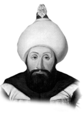

I. ABDÜLHAMİD
Annesi : Rabia Şermi Sultan
Doğumu : 20 Mart 1725
Vefatı : 7 Nisan 1789
Saltanatı : 1774 - 1789 (15 yıl)
I. Abdülhamit, İstanbul’da doğdu. Annesi ona kuvvetli bir tahsil yaptırdı. Zamanındaki mevcut tarihlerin, hepsini gözden geçirdi. Hat sanatı ile de meşgul oldu. Çok hassas ve nazik bir insandı. Zamanında birçok ıslahat ve imar hareketlerinde bulunmuştur.
Osmanlı Devleti’nin gerilemeye başladığı bir zamanda padişahlık yapması onun şahsiyetine gölge düşürmemiştir. Tahta çıktığında geleneklerin dışına çıkarak cülus bahşişi dağıtmadı.
Devrindeki bazı önemli olaylar: 1775’de İran savaşı başladı ve 1779’da bitti. Tarafların kan akıtmaktan başka hiçbir menfaati olmadı. 1787’de Almanya ile savaş başladı. Almanlar çok ümitlerle girdikleri bu savaşı kaybettiler.
1779’da Aynalıkavak Antlaşması yapıldı. 1783’de Kırım Hanlığı sona erdi. 1787’de Rusya ile yeniden savaşa girildi. 1788’de Almanya’ya karşı Sebes Zaferi elde edildi. Bu zaferden sonra I. Abdülhamit’e “Gazi” unvanı verildi. Alman Savaşı’nda düşen, Özi faciası meydana geldi ki, bu kaleyi ellerine geçiren Almanlar tek fert bırakmadan sivil ve asker bütün halkı öldürdüler. Yirmi beş bin nüfusu olan Özi halkını tamamen imha ederek ellerine geçirdiler. I. Abdülha-mit’e bu haber gelince üzüntüsünden felç oldu. Kısa bir zaman sonra da vefat etti. Vefatında altmış dört yaşını henüz bitirmişti. Cenazesi Bahçekapısı’daki türbesine defnedildi.
Erkek çocukları: IV. Mustafa, II. Mahmut, Murat, Nusret, Mehmet, Ahmet, Süleyman.
Kız çocukları: Esma, Emine, Rabia Alimşah, Dürrüşeh-var, Hibetullah Fatma, Melikşah.